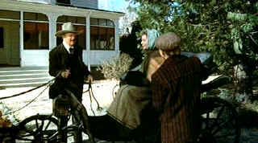

| Shootist,
The/B+,B |
| Paramount/1976/98/ANA 1.85 |
The Shootist may be John Wayne’s greatest performance. It’s his last film. He succumbed to cancer two years later. His heavy breathing, prominent throughout his late movies,
fits perfectly to the role of J.B. Books, legendary gunman, or shootist if you will. Books arrives
in Carson City at the turn of the century. The local newspaper announces the death of Queen
Victoria. Horseless buggies ferry bad guys instead of horses. The time’s they are a changing and
J. B. Books is dying of cancer.
 |
| Fresh air and romance. ©Paramount |
Books must face up to his past, hold his dignity together for the
final days, rekindle a last flash of romance, and pass on some of the truths he has learned along
the way to his becoming a legend. The script falls somewhat short of perfection. The quick, deadly shoot-out
works from Books’ point of view, but you can’t help scratching your head about why Books coaxes
out the guns for the final face down.
Wayne underplays Books with great dignity, lumbering through
scenes with a poignancy earned through more than 100 movies. But he’s never a pathetic figure.
His performance is incredibly relaxed, shaded, and confident. Wayne gets good support from the always still Lauren Bacall. At least her role as the widow
Rogers fits the mold. Ron Howard plays Gillom Rogers with just enough edge off his innocent screen
persona to be convincing. Smaller cameo roles from James Stewart as Doc Hostetler to Hugh O’Brien
as Pharaoh dealer Pulford to Richard Boone as Sweeney and Harry Morgan as Marshall Thibido are all
handled with expertise.
It’s a tight script delivered with precision by director Don
Siegel. The typical jokes of many of films
are absent from The Shootist.
The DVD is might have been closer to the target. It’s still quite good,
but there are scenes not quite up to the standards of a sharpshooter, softening the visuals. Color
is good. Books’ red cushion stands like a target for his bottom. The images is rock stable and
there’s no edge enhancement. Shadow detail is okay. Perhaps the darker scenes could have used a
trifle more contrast range. Blacks are reasonably deep and flesh tones very natural. Dolby Digital
2-channel mono sound is very clean. Included in the package is a short featurette, The Shootist:
The Legend Lives On sheds light on some of the production details.
|
|
|
|

Three Kings/A-,A
Three Kings speeds ahead like a formula one race car on the fast track to reckless
fascination.

Selections from the Feature Archive include articles on
Akira Kurosawa, Blonde Bimbos,
Frank
Darabont, Steven Culp,
John
Herzfeld or Vietnam: The
Hollywood Pariah, and many more....
Robert A. Harris
Tilting at Hollywood
He's part of the dynamic duo that restored Lawrence of Arabia, Spartacus, My Fair Lady and Vertigo.
Harris rides a white horse into the for the cause of preserving our film legacy. Click on the image
to read more.
A Western is a Western is a Western

Place or time it's still a Western from John Ford's Drums
Along the Mohawk to John Sturges' Bad Day at Black Rock.


The National Film Preservation Foundation (NFPF) is the nonprofit organization created by the U.S. Congress to save
America's film heritage.

ISF Monitor Calibrations in the
Tristate New York area. Lots of hardware info and frequent hardware peaks from video expert Kevin
Miller. They may be judgmental, but that's the point, isn't it. Lots of DVD reviews plus news and
more.
 Have you visited Home Theater
Talk lately? One of the friendliest places on the Net for Home Theater and DVD discussion, you
can get help for installation problems or simply share your opinions with other Vidiots. Have you visited Home Theater
Talk lately? One of the friendliest places on the Net for Home Theater and DVD discussion, you
can get help for installation problems or simply share your opinions with other Vidiots.
|